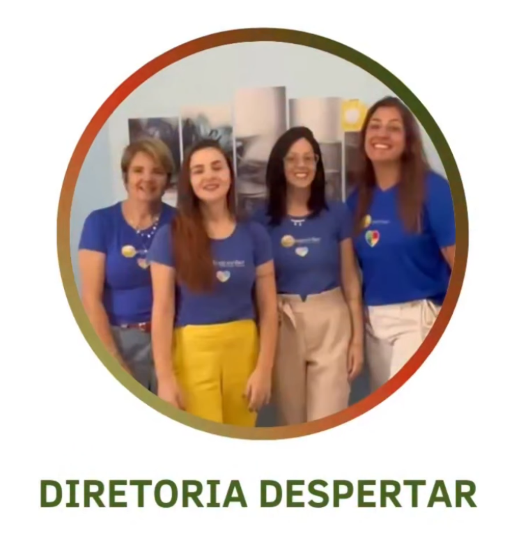
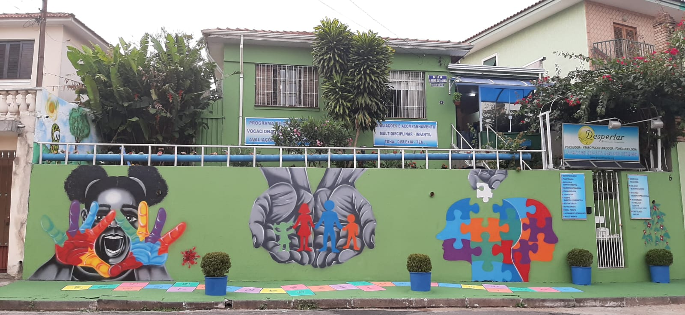

Etapa 1 de 3
Primeiro, entendemos o que está acontecendo.
Escutamos as preocupações, o histórico e como os desafios aparecem em casa, na escola ou no trabalho.
Uma conversa de orientação, sem conclusões apressadas.Atendimento terapêutico em São Paulo
Crianças, adolescentes e adultos acolhidos por uma equipe que compartilha histórias, perspectivas e um mesmo plano de cuidado.
Psicologia • Neuropsicologia • Fonoaudiologia • TEA e TDAH

Comece por aqui
Você não precisa chegar com respostas. Nossa equipe escuta o momento da família e orienta quais especialidades podem fazer sentido.
Nova frente de cuidado
Compreendemos atenção, funções executivas e comportamento sem reduzir a pessoa a um conjunto de sintomas. Família, escola e rotina também fazem parte dessa leitura.
Etapa 1 de 3
Escutamos as preocupações, o histórico e como os desafios aparecem em casa, na escola ou no trabalho.
Uma conversa de orientação, sem conclusões apressadas.Etapa 2 de 3
Quando indicada, a avaliação neuropsicológica considera habilidades cognitivas, emocionais e comportamentais.
A avaliação é uma ferramenta de compreensão, não um rótulo.Etapa 3 de 3
A família recebe orientação e, quando necessário, um plano de acompanhamento articulado entre especialidades.
Objetivos claros e acompanhamento ao longo da jornada.Especialidades integradas
Avaliação de funções cognitivas, atenção, memória, linguagem e aspectos emocionais.
Saber maisEscuta sensível e recursos adequados a cada fase do desenvolvimento.
Saber maisCuidado para ansiedade, depressão, autoconhecimento e mudanças de vida.
Saber maisIntervenções voltadas à comunicação, comportamento, autonomia e família.
Saber maisComunicação, fala, linguagem, motricidade orofacial e processamento auditivo.
Saber maisAvaliação e suporte à aprendizagem em parceria com a família e a escola.
Saber maisA origem do Despertar
Em 2013, aos 14 anos, Cauê Alencar Zandarim teve encefalite herpética. Sua mãe, Vânia Alencar, viveu a busca por respostas e por um cuidado que enxergasse seu filho por inteiro.
Dessa experiência nasceu a decisão de reunir profissionais diferentes em torno de uma mesma história. O consultório cresceu; o propósito permaneceu.
“Eu quis construir o lugar que procurei e não encontrei quando o Cauê mais precisou.”
A história de Cauê transforma a trajetória da família.
A Clínica Despertar entra em pleno funcionamento.
A demanda leva a clínica para um espaço maior.
Três divisões e uma equipe multidisciplinar consolidada.
Uma nova frente dedicada ao cuidado em TDAH.
CauezinhoO cuidado também pode começar com um sorriso.
Acesso e impacto social
Cuidado de qualidade também precisa encontrar quem mais precisa dele.
Inspirado na história que deu origem ao Grupo Despertar, o Projeto Cauê amplia as possibilidades de acesso ao atendimento terapêutico para famílias com diferentes realidades financeiras.
Sua jornada
A coordenação ajuda a identificar o melhor ponto de partida. Quando necessário, profissionais de diferentes áreas constroem o plano em conjunto.
Conte brevemente o que motivou sua busca pelo atendimento.
Compreendemos a história e indicamos o caminho mais adequado.
Objetivos e especialidades são organizados com clareza.
A evolução é acompanhada em diálogo com paciente e família.
Presença de verdade
Coordenação próxima, discussão responsável dos casos e comunicação entre as especialidades fazem parte do jeito Despertar de cuidar.
Conheça nossas unidades
Conteúdo para famílias
Comportamento • 6 min
Acolhimento • 4 min
Desenvolvimento • 5 min
Primeiro acolhimento
Compartilhe o essencial. Nossa equipe entra em contato para orientar o próximo passo.
Em São Paulo
As divisões Infantil e TEA compartilham a mesma localização. O atendimento adulto acontece a poucos minutos, também na Chácara Inglesa.